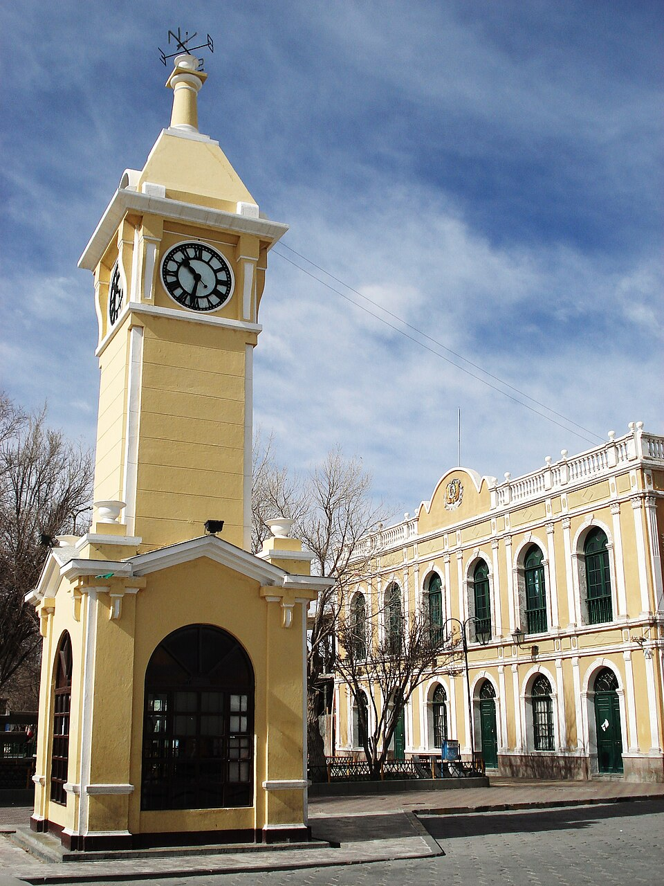
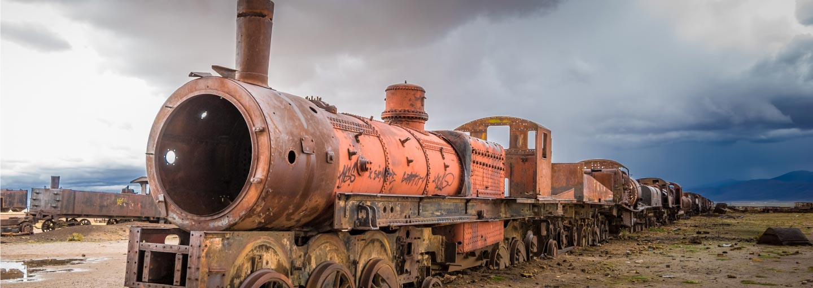

Itinerary
🕗 08:00

Breakfast in town and brief tour of town.
Visit the Uyuni Clock Tower, train station mural, and markets.
🕙 10:00 — Train Cemetery

Explore the historic train cemetery (Cementerio de Trenes).
🕥 10:30 — Colchani Village

Shop local salt products, souvenirs, and see how salt is processed.
🕚 11:00 — Enter the Salar de Uyuni: Visit the Dakar Monument
Stop at the iconic Dakar Monument.
🕐 13:00 — Lunch on the Flats
Enjoy a scenic lunch on the salt flats.
🕓 16:00 — Sunset on the Salt Flat
Watch the famous mirror-effect sunset Uyuni is known for.
🕢 19:30 — Dinner at Tika's Resturant
Enjoy traditional Bolivian food in this upper scale resturant.
🕠 18:30 — Return to Uyuni Town
Relax at your hotel and rest up.
🕙 21:00 — Tour of the Stars

An amazing tour seeing the stars and far away galexies with just your eyes.
🛏️ 23:00 — Rest or Departure
End of the day's itinerary.